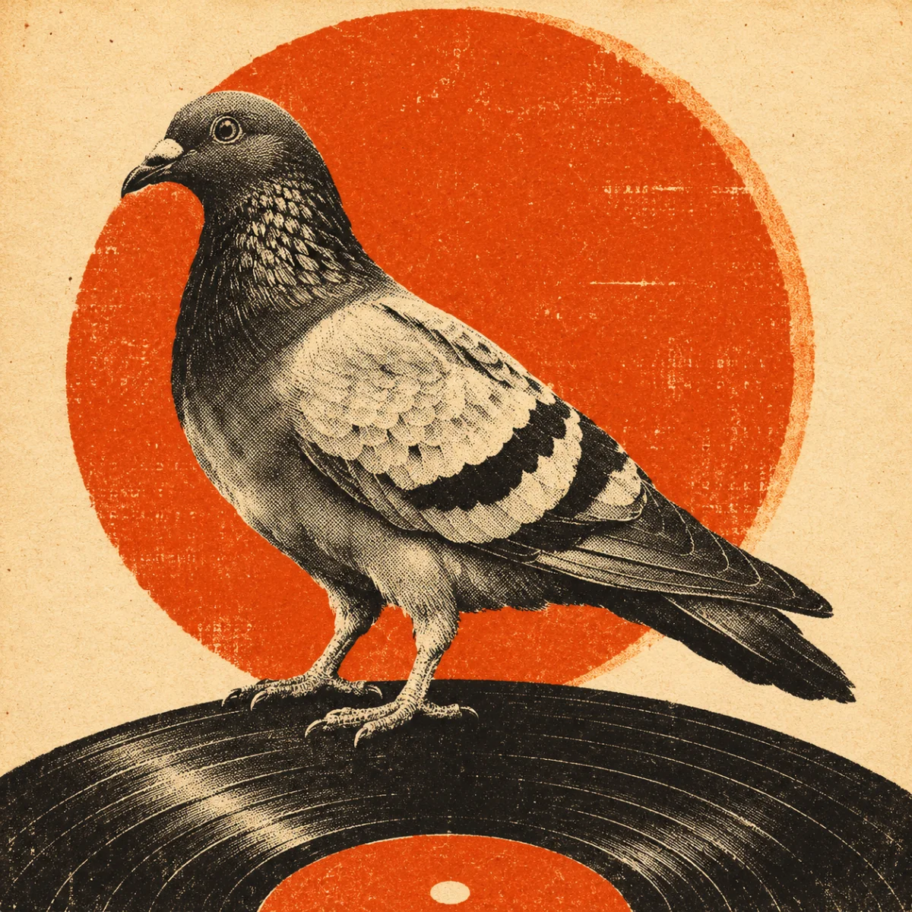

Rádio independente
PomboRadio
Rádio de bairro, direto do Montouro.
Na emissão
A ligar…
Programação
A carregar a programação…
Uma rádio feita entre amigos.
O AutoDJ toca 24 horas por dia, sem anúncios. De vez em quando, alguém entra ao vivo para fazer companhia.
Hip hop, jazz, grime, reggae, rock, blues, soul e dancehall. Tudo misturado.
Queres transmitir? Pede acesso de DJ a quem gere a estação.